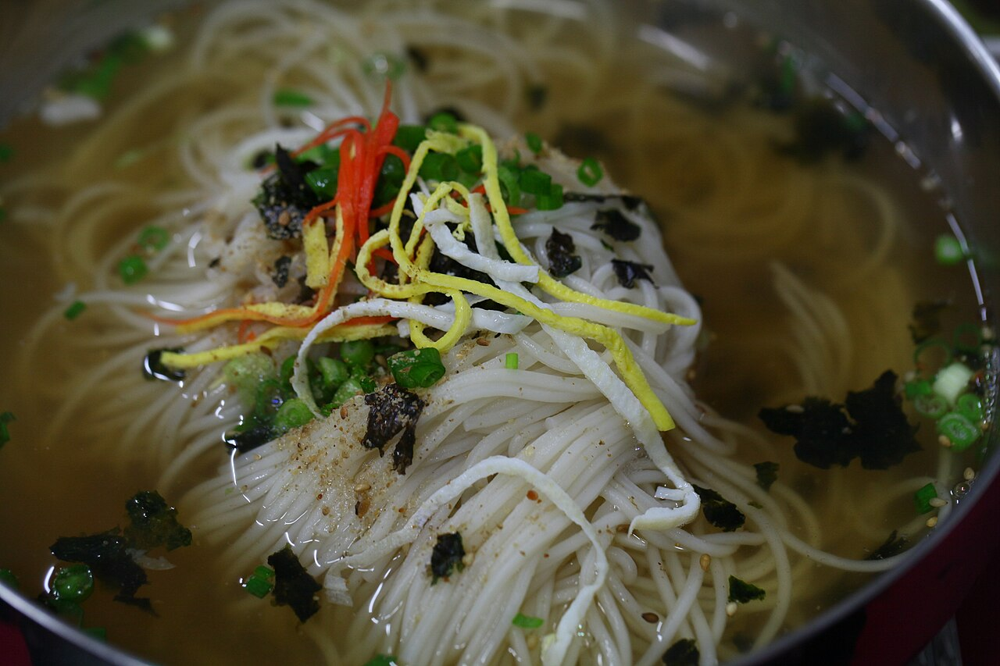
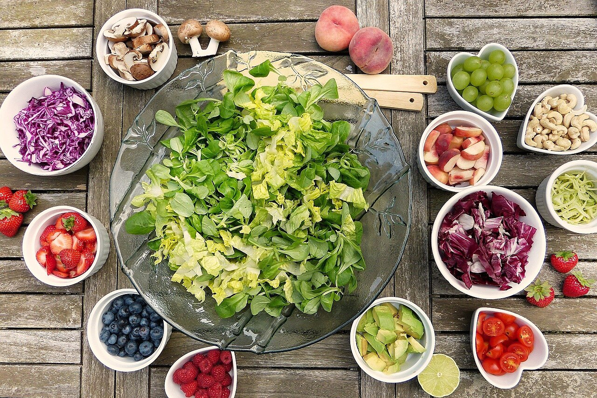
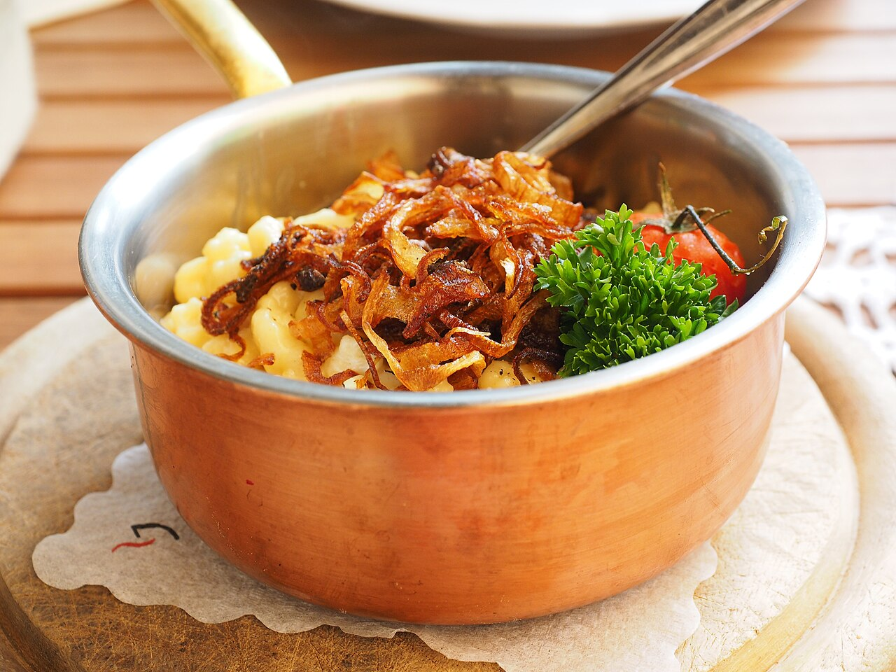

Ăn khuya có hại dạ dày không, 4 thói quen ăn tối tốt hơn

Ăn khuya có hại dạ dày không, 4 thói quen ăn tối tốt hơn: ăn khuya tự nó không phải thủ phạm duy nhất làm dạ dày khó chịu — thứ gây khó chịu thường là ăn quá no, ăn món nhiều dầu mỡ hay cay nóng, rồi nằm xuống ngay sau đó, lúc dạ dày còn đầy thức ăn chưa tiêu. Dạ dày cần khoảng 2–3 giờ để tiêu bớt thức ăn trước khi nằm ngủ. 4 thói quen sau giúp bụng nhẹ nhàng hơn: ăn tối sớm hơn, ăn khuya thì chọn món nhẹ dễ tiêu, ăn chậm và vừa đủ no, hạn chế đồ chiên rán và nước ngọt có gas lúc khuya.
Làm về muộn, học bài khuya hay xem phim tới 10–11 giờ đêm, bụng đói cồn cào — ăn vội một tô mì rồi leo lên giường ngủ, sáng dậy bụng đầy hơi, ợ chua, người uể oải. Cảnh này quen với nhiều người. Ăn khuya không hẳn là cấm kỵ: đói thì vẫn nên ăn, chỉ cần ăn đúng cách để dạ dày không phải làm việc nặng lúc cơ thể đã muốn nghỉ.
Cảnh báo an toàn trước khi làm gì
Bài này chỉ nói thói quen ăn uống chung, không thay lời khuyên của bác sĩ. Đau dạ dày kéo dài nhiều ngày, ợ chua thường xuyên, sụt cân không rõ lý do, hay đi ngoài ra máu thì nên đi khám sớm, không tự chữa bằng mẹo dân gian hay thuốc không kê đơn kéo dài. Người đang uống thuốc dạ dày, người có bệnh trào ngược, tiểu đường hay đang mang thai thì hỏi bác sĩ về giờ ăn và món ăn hợp với mình. Không uống rượu bia lúc đói để 'lót dạ' — rượu lúc bụng rỗng làm dạ dày khó chịu hơn.
1. Ăn tối sớm hơn, để bụng nghỉ 2–3 giờ trước khi ngủ
Ăn tối khoảng 18–19 giờ nếu ngủ lúc 22–23 giờ: bụng có khoảng 2–3 giờ để tiêu bớt thức ăn trước khi nằm xuống. Nằm ngay sau khi ăn no làm thức ăn và dịch vị dễ trào lên thực quản, gây ợ chua, nóng rát — đó là lý do nhiều người ăn khuya xong ngủ dậy thấy khó chịu. Về muộn thì ăn nhẹ thay vì ăn một bữa no như bữa chính: một bát cháo hay tô mì nhỏ là đủ. Ăn xong thì ngồi nghỉ, đi lại nhẹ nhàng trong nhà, không nằm ngay — kể cả nằm xem điện thoại.
2. Ăn khuya thì chọn món nhẹ, dễ tiêu
Đói lúc khuya thì chọn món nhẹ, ít dầu mỡ: cháo loãng, mì nước, súp, sữa ấm, trái cây ít chua như chuối, đu đủ, hay một đĩa salad rau nhỏ. Món nước nóng vừa dễ tiêu vừa làm bụng ấm lên, dễ ngủ hơn. Ăn một lượng nhỏ, vừa đủ hết cơn đói là dừng — bữa khuya không phải bữa chính thứ hai. Trái cây chua như cam, quýt, dứa ăn lúc bụng đói dễ làm cồn cào, nên để dành ăn ban ngày.

3. Ăn chậm, nhai kỹ, vừa đủ no
Ăn khuya hay ăn vội vì mệt và buồn ngủ — ăn nhanh, nhai qua loa làm dạ dày phải làm việc nặng hơn, thức ăn xuống dạ dày chưa nhuyễn cũng khó tiêu hơn. Ăn chậm lại, nhai kỹ từng miếng, đặt đũa xuống giữa các lần gắp để ăn chậm hơn. Dừng lại khi vừa hết đói, không cần ăn tới no căng — no căng rồi nằm ngủ là lúc bụng khó chịu nhất. Uống nước lọc từng ngụm nhỏ trong lúc ăn; nước ngọt có gas làm bụng đầy hơi, không hợp uống lúc khuya.
4. Hạn chế đồ chiên rán, cay nóng và nước ngọt có gas lúc khuya
Đồ chiên rán nhiều dầu mỡ tiêu chậm, nằm xuống ngủ trong khi dạ dày còn đầy dầu mỡ thì bụng nặng nề cả đêm. Món cay nóng như mì cay, lẩu cay kích thích dạ dày tiết nhiều dịch vị hơn, người có dạ dày yếu dễ ợ chua, nóng rát sau khi ăn. Nước ngọt có gas và cà phê đặc lúc khuya vừa làm đầy hơi vừa làm khó ngủ. Thèm thì ăn một ít cho đỡ thèm rồi dừng, không ăn thành bữa no — hoặc để dành món đó cho bữa trưa hôm sau.

Giới hạn cần nhớ
Các thói quen trên hợp với người khỏe mạnh bình thường, ăn khuya vì đói hay vì lịch sinh hoạt muộn. Người có bệnh dạ dày, trào ngược, tiểu đường, đang mang thai hay đang uống thuốc theo đơn thì hỏi bác sĩ — bài này không thay được lời khuyên riêng cho từng người. Ăn khuya thường xuyên vẫn làm rối giấc ngủ và dễ tăng cân theo thời gian, vì vậy tốt nhất là ăn tối đủ no để khuya không đói. Bài này chỉ nói thói quen ăn uống — không nói về thuốc hay cách chữa bệnh dạ dày.
Kết lại: tối nay nếu đói lúc khuya, cứ ăn một bát cháo loãng hay tô mì nước, ăn chậm rồi ngồi nghỉ một lúc hãy ngủ — dạ dày được nghỉ, giấc ngủ cũng êm hơn.
- Muốn bài viết có thêm người hỏi mua? Xem các gói tăng tương tác tại viettuongtac.com.
- Cần một website bán hàng để khách xem mẫu và đặt hàng dễ hơn? Xem mẫu tại webkhoinguon.com.
💬 Bình luận
Đang tải bình luận…